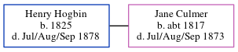

Henry Hogbin 1825 - 1878
[ Home ] | [ Calendar ] | [ Surnames Index ] | [ Errors ] | [ Family History ]Henry Hogbin, the husband of Jane Culmer (the four times great-aunt of Nigel Horne), was born in Preston, Kent, England in 18251,2,3,4,5. He married Jane in Eastry, Kent, England in 1849.
During his life, he was living in Cheriton, Kent, England in 18411; and in Stourmouth, Kent, England in 18512, in 18613 and in 18714. That is also where he died in Jul/Aug/Sep 1878 in Eastry5.
Citations
- 1841 England Census Online publication - Provo, UT, USA: The Generations Network, Inc., 2006.Original data - Census Returns of England and Wales, 1841. Kew, Surrey, England: The National Archives of the UK (TNA): Public Record Office (PRO), 1841. Data imaged from the National
- 1851 England Census Online publication - Provo, UT, USA: The Generations Network, Inc., 2005.Original data - Census Returns of England and Wales, 1851. Kew, Surrey, England: The National Archives of the UK (TNA): Public Record Office (PRO), 1851. Data imaged from the National
- 1861 England Census Online publication - Provo, UT, USA: The Generations Network, Inc., 2005.Original data - Census Returns of England and Wales, 1861. Kew, Surrey, England: The National Archives of the UK (TNA): Public Record Office (PRO), 1861. Data imaged from the National
- 1871 England Census Online publication - Provo, UT, USA: The Generations Network, Inc., 2004.Original data - Census Returns of England and Wales, 1871. Kew, Surrey, England: The National Archives of the UK (TNA): Public Record Office (PRO), 1871. Data imaged from the National
- England & Wales, FreeBMD Death Index: 1837-1915 Online publication - Provo, UT, USA: The Generations Network, Inc., 2006.Original data - General Register Office. England and Wales Civil Registration Indexes. London, England: General Register Office. © Crown copyright. Published by permission of the Cont
Family Tree
Map
Generated by ged2site. Last updated on Jul 3, 2024
Known Issues
Marriage date (1849) has no citations
Listed in the residence for 1851, but spouse Jane Culmer is not